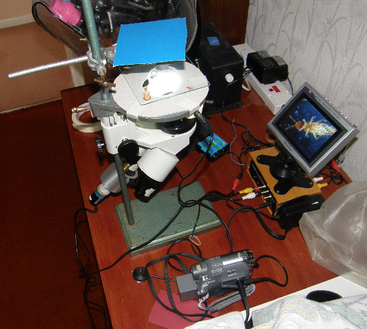
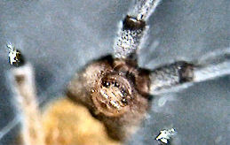
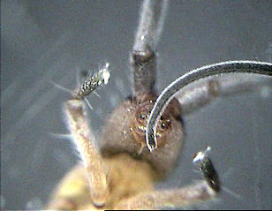
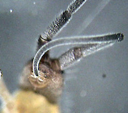
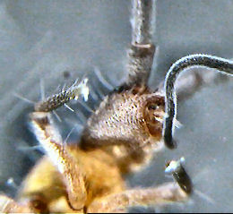
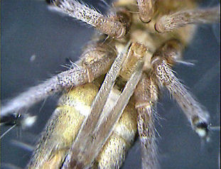

|
Observation Techniques
Identifying organisms:
View the collection container, using a stereo microscope. You will need to identify the springtails sufficiently well to be able to separate them from other organisms. The Identification section provides sufficient information for this purpose.
Extracting organisms:
Springtails have a waxy coating on the exoskeleton and it can be frustrating trying to lift them out of the collection fluid (water for live observation 70% alcohol + 5% glycerine for mounts). For water, use a wire loop lifter and for alcohol use a micropipette. For moving specimens in mountants use a bristle lifter. If specimens are being lifted from a solid surface then a pooter can be used, but do take the usual precautions, i.e. use a filter (e.g. clean cotton wool) and sterilise equipment after use.
Wire loop lifters are illustrated below. These were made using copper wire inserted into glass tubing and held in by wax. Other construction methods will suggest themselves. For scale, the loops are 1.5 to 2.5 mm in diameter.
|
|
Note: some springtails will not sink in alcohol/acetic acid unless the container is heated. A more convenient collecting fluid is von Torne’s medium (100 ml isopropyl alcohol/3 ml glacial acetic acid/0.3 ml 40% formol) as specimens will sink in this without heating being necessary.
[Information extracted from ‘The Collembola of North America’ by Kenneth Christiansen and Peter Bellinger, published by Grinnell College, Grinnell, Iowa 50112.]
|
|
Observing Live Springtail Behaviour with an Inverted Microscope:
Most microscopists find springtail mouth parts difficult because they are so often hidden from view inside a gnathal pouch; they are clearly visible live only when exserted for use in various ways. They can, of course, be dissected, mounted in temporary preps in preserved specimens softened with dilute KOH. But how are they used in life? Can we make videorecordings?
Mick Chaplin suggested a novel way of viewing live specimens from the underside. The springtails were confined in small optically clear coin capsules. A small stereo microscope was inverted and the coin capsule supported on a platform. Video recording was carried out using a small 'bullet' video camera (without the normal lens fitted) in place of one eyepiece.

|
Tomocerus longicornis was used which has extremely long antennae; the springtail, clearly irritated, but not harmed, obliged by showing how it used its paired maxillae and labia to keep at least the fourth antenna segment clean. Segment four is the longest, covered by hundreds, or is it thousands of setae arranged in neat annulations; and there will be important minute sense organs there as well.
This T. longicornis , only about 4mm. long (without antennae) could still move parts of the body; so a few videostills were made from which it was possible to analyse what was happening. It became clear that the delicate maxillae are used to keep the antennae brushed clean as it is drawn between the left and right labial appendages.
It was also clear that the tip was brushed for 14 frames – more than half a second!
Because this seemed to us to offer originality and some success, we are going to develop it further – and Mick is customizing accessories for his Wild M40 inverted microscope.
What is the next step? Try to record mandibles in feeding, perhaps using flaked fish food or even tiny pieces of home-grown fungal lawn! Keith Brocklehurst.
Below are shown some stills from the video recording, the last still shows the ventral tube extended and the two dens of the furca folded up against the abdomen:-
|





|
|
• Welcome • The PMS • The Study Group • What are Springtails? • Collecting Techniques • Observation Techniques • Cultures • Identification • Springtails of the Month • Photo Gallery • Correspondence •Related Sites • E-mail • PMS Main Site •
|
|